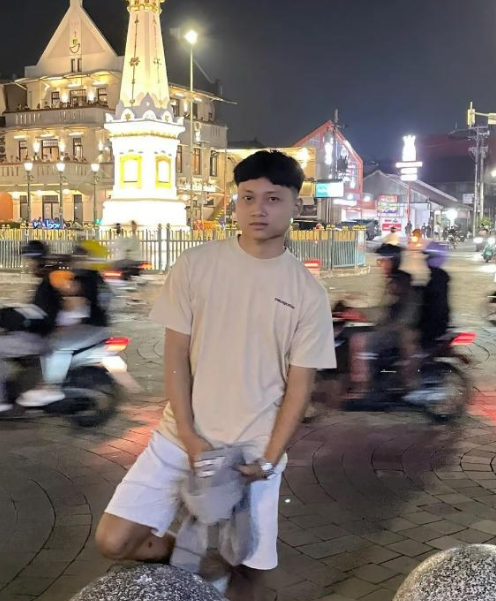
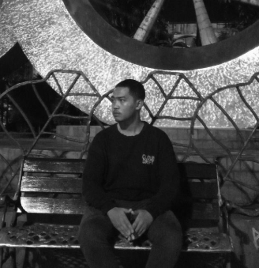

Dari Hotel ke Rumahmu
Mutiara Mandiri adalah sebuah fasilitas yang melayani tamu dengan standar kenyamanan tinggi. Seiring berjalannya waktu, kami menyadari ada banyak sekali furnitur berkualitas tinggi yang masih sangat layak pakai saat masa pembaruan interior hotel dilakukan.
Dari pada berakhir menjadi limbah, kami berinisiatif untuk melakukan Deep Cleaning & Restorasi pada barang-barang seperti sofa, meja dan kursi, closet, wastafel, hingga alat makan estetik. Misi kami adalah menghadirkan kualitas dan kenyamanan ala hotel bintang lima ke rumah Anda, tentunya dengan harga yang sangat ramah di kantong dan mendukung gerakan peduli lingkungan (Eco-Friendly).
MUTIARA MANDIRI EX HOTEL dibangun tahun 2024 yang lalu oleh anak muda yang bernama Wahyu Waharana Utama (22) yang dibantu oleh saudaranya Bagus Satrio Nugroho Putro (22) sekaligus menjadi anggota dari Mutiara Mandiri.
Lokasi berada di kesambi kerobokan, Kab. badung, Kec. kuta utara, Ibukota denpasar, Prov. Bali, Indonesia.
Pengusaha Muda Mutiara Mandiri ex Hotel
